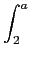
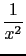
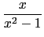
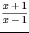

suivant:
Réécrire des expressions transcendantes
monter:
Limites
précédent:
Limites : limit limite
Table des matières
Index
Limite et intégrale
On ne donne ici que deux exemple :
Déterminer la limite quand
a
tend vers l'infini de :

dx
On tape :
limit(integrate(1/(x
^
2),x,2,a),a,+(infinity))
On obtient (vérifier que
a
est formelle sinon faire
purge(a)
) :
1/2
Déterminer la limite quand
a
tend vers l'infini de :
( + ln())
dx
On tape :
limit(integrate(x/(x
^
2-1)+log((x+1)/(x-1)),x,2,a),
a,+(infinity))
On obtient (vérifier que
a
est formelle sinon faire
purge(a)
):
+(infinity)
Documentation de
giac
écrite par Renée De Graeve